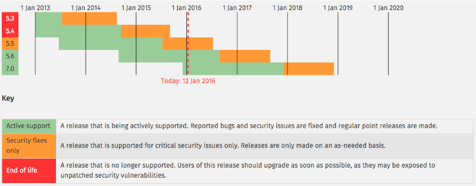

Acceptance testing in PHP with
Codeception
Techmeetup Edinburgh January 2016
By Thomas Dutrion / @tdutrion - 13/01/2016
About me
- Founder & Developer / web architect at Engineor
- Working with PHP since 2003
- Doing my best to work properly!

Scotland PHP

Aberdeen (1st Wednesday)
Edinburgh (3rd Tuesday)
Glasgow (3rd Tuesday)
Dundee (3rd Thursday)
Modern PHP: industrialisation
PHP is mature (object oriented, namespaces...).
PHP has a large community.
PHP has a large ecosystem.
Why large corporation aren't using it more often?
Testability
What can we test?
- Unit testing
- Integration testing
- Functional testing
- Acceptance testing
- Mutation testing
- ...
What can we charge for?
- Unit testing (sometimes)
- Integration testing (occasionnaly)
- Functional testing (occasionnaly)
- Acceptance testing (sometimes)
- Mutation testing (rarely)
Unit testing
- Small units of isolated code (SOLID)
- Takes time to write and update
Perfect for critical processes in your application
Integration testing
- Test larger units of code together
- Does not give specific details to find a bug
- Less expensive (less tests)
Acceptance testing
- High level testing (as a user)
- Client point of view
- Less code, easier to implement
- Only test final result
Can also be used in business to prove the project completion
Codeception
One tool, multiple testing types
General introduction
History
- Started in 2011
- First stable January 2012
- Currently 2.1.5
- 4677 commits yesterday night (4267 in October*)
- 322 contributors yesterday (295 in October*)
*same talk in October last year for DundeePHP
General introduction
Problem solved
- Bridge between different testing types
- No other languages required (for php developers)
- Extensible
- Covers all the major PHP framework
Let's get into it...
PHP 5.4 minimum (use at least 5.6 anyways!)
PHP supported versions
You already know it!
Or not, but you should have a look at these tools
Based on recommended and proven tools
- PHPUnit
- Symfony browserkit
- Selenium / PhantomJS (optional)
- ...
You already know it!
Test suites are written in PHP.
You can test websites created in any language (as you are only testing the result)
Acceptance testing 101
Follow the quickstart!
- Install codeception (prefer using composer, globally or in dev only)
- Bootstrap (directories and files structure, basic configuration)
- Generate acceptance testing
- Write tests
- And run!
Install (with Composer)
$ composer require "codeception/codeception:*"
./composer.json has been created
Loading composer repositories with package information
Updating dependencies (including require-dev)
- Installing symfony/polyfill-mbstring (v1.0.1)
Loading from cache
- Installing phpunit/phpunit (4.8.21)
Loading from cache
- Installing codeception/codeception (2.1.5)
Downloading: 100%
Writing lock file
Generating autoload files
Directory content
$ tree -I vendor
.
├── composer.json
└── composer.lock
Option -I to remove the vendor folder from the display as it contains only third party libraries.
Bootstrap
$ php vendor/bin/codecept bootstrap
Initializing Codeception in /presentations/2016-01-13-Codeception-Techmeetup-Edinburgh/demo
File codeception.yml created <- global configuration
tests/unit created <- unit tests
tests/unit.suite.yml written <- unit tests suite configuration
tests/functional created <- functional tests
tests/functional.suite.yml written <- functional tests suite configuration
tests/acceptance created <- acceptance tests
tests/acceptance.suite.yml written <- acceptance tests suite configuration
---
tests/_bootstrap.php written <- global bootstrap file
Building initial Tester classes
Building Actor classes for suites: acceptance, functional, unit
-> AcceptanceTesterActions.php generated successfully. 0 methods added
\AcceptanceTester includes modules: PhpBrowser, \Helper\Acceptance
AcceptanceTester.php created.
-> FunctionalTesterActions.php generated successfully. 0 methods added
\FunctionalTester includes modules: \Helper\Functional
FunctionalTester.php created.
-> UnitTesterActions.php generated successfully. 0 methods added
\UnitTester includes modules: Asserts, \Helper\Unit
UnitTester.php created.
Bootstrap is done. Check out /presentations/2016-01-13-Codeception-Techmeetup-Edinburgh/demo/tests directory
Directory content
$ tree -I vendor
.
├── codeception.yml
├── composer.json
├── composer.lock
└── tests
├── _bootstrap.php
├── _data
│ └── dump.sql
├── _envs
├── _output
├── _support
│ ├── AcceptanceTester.php
│ ├── FunctionalTester.php
│ ├── Helper
│ │ ├── Acceptance.php
│ │ ├── Functional.php
│ │ └── Unit.php
│ ├── UnitTester.php
│ └── _generated
│ ├── AcceptanceTesterActions.php
│ ├── FunctionalTesterActions.php
│ └── UnitTesterActions.php
├── acceptance
│ └── _bootstrap.php
├── acceptance.suite.yml
├── functional
│ └── _bootstrap.php
├── functional.suite.yml
├── unit
│ └── _bootstrap.php
└── unit.suite.ymlOption -I to remove the vendor folder from the display as it contains only third party libraries.
Test generation
$ vendor/bin/codecept generate:cept acceptance Welcome
Test was created in /presentations/2016-01-13-Codeception-Techmeetup-Edinburgh/demo/tests/acceptance/WelcomeCept.php
Generates tests/acceptance/WelcomeCept.php:
<?php
$I = new AcceptanceTester($scenario);
$I->wantTo('perform actions and see result');
Write tests
<?php
$I = new AcceptanceTester($scenario);
$I->wantTo('ensure that Edinburgh is listed on the homepage');
$I->amOnPage('/');
$I->see('Edinburgh');
tests/acceptance/WelcomeCept.php
Update configuration
# Codeception Test Suite Configuration
#
# Suite for acceptance tests.
# Perform tests in browser using the WebDriver or PhpBrowser.
# If you need both WebDriver and PHPBrowser tests - create a separate suite.
class_name: AcceptanceTester
modules:
enabled:
- PhpBrowser:
url: http://techmeetup.co.uk/
- \Helper\Acceptance
tests/acceptance.suite.yml
Basic example results (pass)
$ vendor/bin/codecept run
Codeception PHP Testing Framework v2.1.5
Powered by PHPUnit 4.8.21 by Sebastian Bergmann and contributors.
Acceptance Tests (1) --------------------------------------------
Ensure that frontpage works (WelcomeCept) Ok
-----------------------------------------------------------------
Functional Tests (0) --------------------------------------------
Unit Tests (0) --------------------------------------------------
Time: 630 ms, Memory: 10.00Mb
OK (1 test, 1 assertion)Add test
<?php
$I = new AcceptanceTester($scenario);
$I->wantTo('ensure that Edinburgh is listed on the homepage');
$I->amOnPage('/');
$I->see('Edinburgh');
$I->see('This does not appear on the page');
tests/acceptance/WelcomeCept.php
Basic example results (fail)
$ vendor/bin/codecept run
Codeception PHP Testing Framework v2.1.5
Powered by PHPUnit 4.8.21 by Sebastian Bergmann and contributors.
Acceptance Tests (1) ---------------------------------------------
Ensure that frontpage works (WelcomeCept) Fail
------------------------------------------------------------------
Functional Tests (0) ---------------------------------------------
Unit Tests (0) ---------------------------------------------------
Time: 605 ms, Memory: 10.00MbBasic example results (fail)
There was 1 failure:
---------
1) Failed to ensure that frontpage works in WelcomeCept (tests/acceptance/WelcomeCept.php)
Step I see "This does not appear on the page"
Fail Failed asserting that /
-->
TechMeetup - Home
Tech Meetup
About
Videos
Blog
Calendar
TechMeetup is a monthly excuse for developers and the tech communit
[Content too long to display. See complete response in '_output' directory]
--> contains "this does not appear on the page".Basic example results (fail)
Scenario Steps:
3. $I->see("This does not appear on the page") at tests/acceptance/WelcomeCept.php:6
2. $I->see("Edinburgh") at tests/acceptance/WelcomeCept.php:5
1. $I->amOnPage("/") at tests/acceptance/WelcomeCept.php:4
FAILURES!
Tests: 1, Assertions: 2, Failures: 1.Change tests
<?php
$I = new AcceptanceTester($scenario);
$I->wantTo('ensure that Edinburgh is listed on the homepage');
$I->amOnPage('/');
$I->see('Edinburgh');
$I->click('Edinburgh');
$I->amOnPage('/edinburgh.html');
$I->see('2nd Wed of month');
tests/acceptance/WelcomeCept.php
Results
$ vendor/bin/codecept run
Codeception PHP Testing Framework v2.1.5
Powered by PHPUnit 4.8.21 by Sebastian Bergmann and contributors.
Acceptance Tests (1) --------------------------------------------
Ensure that frontpage works (WelcomeCept) Ok
-----------------------------------------------------------------
Functional Tests (0) --------------------------------------------
Unit Tests (0) --------------------------------------------------
Time: 834 ms, Memory: 10.00Mb
OK (1 test, 2 assertions)Modern frontend issues
Problem:
- Since 2005, AJAX is everywhere (XmlHttpRequest)
- New architecture: MVVM javascript in front, PHP/node… in back
Testing problem: PHPBrowser / Curl can not read javascript modifications.
Solution 1:
Use selenium driver and delays
Simple configuration (see the documentation).
Looks good when showing off to your client!
composer require --dev "netwing/selenium-server-standalone:^2.46"Solution 1:
Use selenium driver and delays
# Codeception Test Suite Configuration
#
# Suite for acceptance tests.
# Perform tests in browser using the WebDriver or PhpBrowser.
# If you need both WebDriver and PHPBrowser tests - create a separate suite.
class_name: AcceptanceTester
modules:
enabled:
- WebDriver
- \Helper\Acceptance
config:
WebDriver:
url: 'https://phpmentoring.org'
browser: 'firefox'
window_size: 1024x768Solution 1:
Use selenium driver and delays
<?php
$I = new AcceptanceTester($scenario);
$I->wantTo('ensure that tdutrion is displayed as a mentor');
$I->amOnPage('/mentors');
$I->wait(1);
$I->see('Thomas Dutrion');Solution 1:
Use selenium driver and delays
java -jar vendor/bin/selenium-server-standalone-2.46.0.jarvendor/bin/codecept runSolution 2:
Use something more appropriate?
Google recommends Karma, but other exist (Nightwatch.js, Jasmine).
Problem 2:
I can not use Java and Firefox on my continuous integration server!
(Who would do that?)
Solution:
Use a headless browser (PhantomJS)
Just a configuration again, try at home!
Questions?
Thanks for having me!
Special thanks to / reading recommendation:
- Jeremy Coates (@phpcodemonkey) for Testing with codeception
- PHPNW (@phpnw), great PHP group that made me discover Codeception
- All of you for your patience and supporting me!
- Techmeetup (@techmeetup) to let me talk here
Please rate and comment this talk on SlideShare: http://goo.gl/068L56